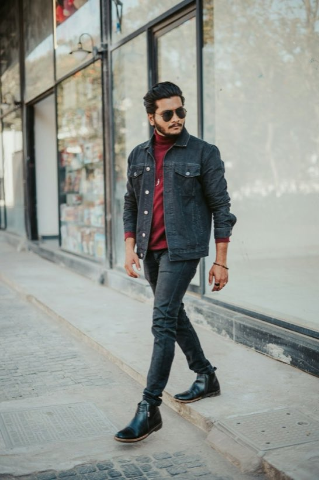
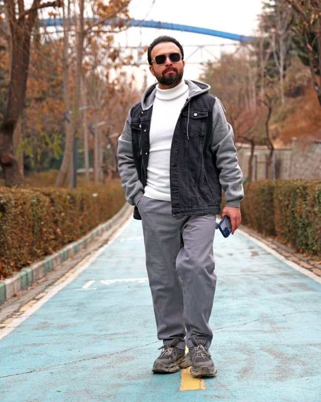

Share cards, every format
The cards Kitted could hand you after a fit check, for TikTok, Instagram, Snapchat and messages. Each one is drawn at true proportions (one third of export size). The photos are free stock and the scores are demo numbers. Three designers built these, three critics reviewed them, and everything here is the revised version.
Your calls
- Face: your choice per share. Neck down is the default, and "Full photo" shares the whole picture.
- Which scores: 7.0 and up, plus re-check wins. A low score only shows as the "before".
- Tone: mostly premium, plus a few loud formats for TikTok.
- Both: stills and short videos.
What the critics agreed on
- The formats that get posted are a game (guess the score) or a story (one fix moved it). A plain score reads as an ad.
- One sign-off everywhere: the KITTED label, then "Score your fit · trykitted.com".
- No text smaller than 11 pt drawn, so nothing turns to mush once TikTok compresses it.
- Kit's name stays off shared cards, because people who see them don't know who Kit is.
Recommended first build
- The Story card, with a TikTok-safe version and the face toggle
- The before → after still
- "Beat my 8.0", the card you send a friend
- Save to Photos for everything else
About 3 days, with one new package (react-native-view-shot). Until video export exists, screen-record the app's own score reveal for your daily posts.
| Format | Made how | Needs | Work | When |
|---|---|---|---|---|
| Story card, 1:1, feed slides | An image captured in the app | react-native-view-shot (your OK), photo-saving permission text | 2–2.5 days | v1 |
| Before → after still, Beat my 8.0 | The same capture | Nothing more | 1 day | v1 |
| Hang tag, weekly carousel | The same capture | Your history (carousel) | 1–1.5 days each | v1.1 |
| Stickers for Instagram Stories | Instagram's Stories share link | A Facebook App ID (Meta developer account) | 1.5 days | v1.1 |
| Videos: reveal, before → after, guess | Our own video writer on the phone (no upload) | A native module; maybe Skia (your OK) | 4–6 days, then 1–2 per format | Later |
| TikTok green screen, Snapchat stickers | TikTok Share Kit, Snap Creative Kit | Developer accounts and review | 1–2.5 days each | Later |
| Link preview (trykitted.com/f/…) | A web page on our server | Domain, hosting, a privacy decision | 3+ days | Later |
Stills
For Stories, the feed and messages. Built with the app's own look.
Story card · 9:16
Instagram and Snapchat Stories (A, B) and TikTok photo mode (A for TikTok). The look leads, the score sits under it. Each card keeps its words inside its destination's safe zone. Scores are demo numbers.

Full photo shares the whole picture, background too.
- Cream check overshirt
- Tan tee
- Wide khaki trousers
- White chunky sneakers

Burgundy turtleneck
Black slim jeans
Black chelsea boots
trykitted.com
Instagram feed post · 4:5 carousel
Scores are demo numbers. The post he keeps on his profile. Slide 1 is the cover and the grid tile (key content inside the centered 3:4), slide 2 is what a viewer can copy, slide 3 closes the loop. A re-check win swaps in "The move".
trykitted.com
yours score?
Send a fit pic. Get a score out of 10
and the one fix that raises it.
Same photo, same score.
trykitted.com


together
Messages and links · 1:1, Beat my score, 16:9, link preview, Pinterest
Where a fit gets sent to one friend or a group chat, and where a link travels. Small, so the score and the label do the work; the photo leads wherever a photo is allowed. Scores are demo numbers.
trykitted.com
trykitted.com
trykitted.com
wide khaki trousers

On his own content
Stickers he places over his own photo, plus the brand's signature object.
B1 · Stickers on his own story
The Strava pattern: Kitted hands Instagram (Stories sticker API) and Snapchat (Creative Kit) a transparent sticker, and he places it on his own photo. Four stickers, each drawn for a 1080-wide export with no word under 11px drawn, each carrying its own backing and baked shadow. Scores are demo numbers.
B2 · The hang tag (the one tag spec)
The brand's signature object, and the only tag design in the system: a clipped-corner chalk tag, punched eyelet, cotton string, 1.3px copper stitch. It carries the label, the date, the score lockup and the pieces by name. On every card it hangs at 0.74×, so its smallest words land at 11px drawn. Scores are demo numbers.
Full photo shares the whole picture, background too.
B3 · Monthly recap: "My October fits" AFTER LAUNCH
A Wrapped-lite identity card for the 1st of the month: his days drawn as the app's outfit flats, his photo only for the best fit, then counts that match exactly what's on the card. Not a ranking, not a streak. Scores are demo numbers.
Full photo shares the whole picture, background too. One choice for the whole card, asked fresh each time.
B3b · "My fits this week" (TikTok photo-mode carousel)
Six 9:16 slides: a cover, then one fit per slide, neck-down, each with its score lockup and three pieces. Everything sits in TikTok's safe core (14% top, 30% bottom, 12% right). Shown: the cover and three of the five fits. Demo photos are different people; his carousel is all his own fits.
Motion
Short loops for TikTok, Reels and Shorts. Press Replay under a card to watch it again.
The score reveal (video)
A Reel, TikTok or Short of one fit check: the hook over his photo from the first frame, the fit being read, the tape locking on the score, then three pieces. The app's own reveal, cut to the length of a post.
overshirt
trousers
sneakers
Before → after (video)
The re-check win, the strongest story the app has: the same fit, one fix he made, the score moving. A premium cut in the app's own motion, and a loud cut with hard cuts and kinetic type for TikTok. Demo photos; the real card uses his own two photos. Scores are demo numbers.
worn open+1.0
BEFOREAFTERtogether
Guess the fit's score (video, IG Story, green screen)
The rate-the-fit trend, built to pull comments: the score stays sealed until the end, so viewers guess first. An IG Story version hands the guess to Instagram's own quiz sticker, and green-screen backdrops let him talk over his own card. Neck down only, by design. Scores are demo numbers.
fit's score.
close?
jacket
sweater
jeans
fit's score.
jacket
trousers
What did it score?
ON CAMERA
fit's score.
ON CAMERA
close?
fit's score.
ON CAMERA
Open for you
- OK react-native-view-shot (a new package) so the app can save these cards as images.
- The sign-off line "Score your fit · trykitted.com" assumes the domain. Register it first (already on your list).
- The only before/after demo pair shows socks, no shoes. Your own re-check photos will replace it.
Rules kept
- Rates the outfit, never you. "Guess the fit's score" is neck down only.
- No occasion, no fix you haven't made yet, no ticket numbers, no time of day.
- No emoji, no badges, no streaks.